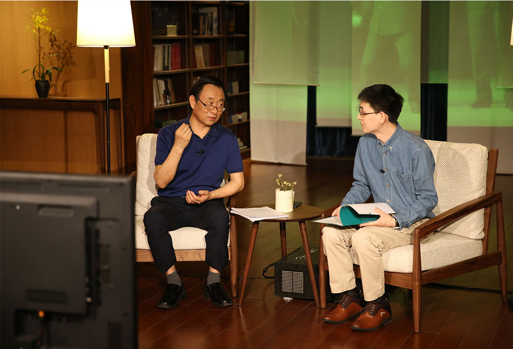

首页>>他们鉴证了文明——非遗影像公开课简介
他们鉴证了文明
——非遗影像公开课
在2020年“文化和自然遗产日”到来之际，国家图书馆中国记忆项目中心特别策划推出《他们鉴证了文明——非遗影像公开课》系列课程，创新性地采用“纪录片+公开课”的形态，从国家级非遗代表性传承人记录工作优秀成果中精选20部非遗纪录片，邀请著名非遗专家实时解读纪录片。以“陪同观看、伴随讲解”为理念，从学术角度对影片中所涉及的非遗知识和传承故事进行点评讲解，使观众在欣赏纪录片的同时，更深一层地理解非物质文化遗产的要领和内涵，更进一步领会非遗保护的精神和意义。本次系列课程是国家级非遗代表性传承人记录工作成果创新性转化的重要成果，也是 “文化和自然遗产日”非遗宣传展示全国主会场活动——“2020非遗影像展”的重要展示部分。
